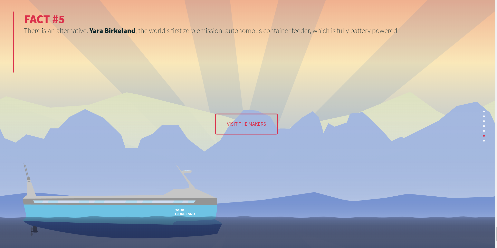
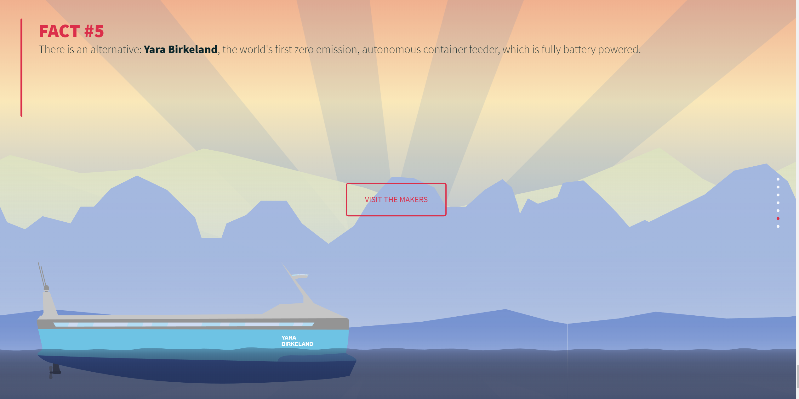

Containership madness
In this lecture our task simply was to visualize data. For that matter we needed to search for suited data which can be visualized in a fancy way. We had some ideas and finally agreed on containership pollution.
The idea we finally realized was a storytelling interface where we could visualize our research. We wanted to show the audience how bad pollution of container ships is compared to daily used things like cars. For that we created a website where we can illustrate facts. In summary we seperated our story in five facts. With every fact we tell a something about container ship pollution or compare things against eachother. A visitor can read our story by scrolling through those facts.
After our research we began to sketch some mockups. In summary we hat five iterations in our design. During designing we also got ourselves into typography by meeting some helpful people. At the end we began to implement everything in our website. Therefor we used GSAP for some professional animations.
In the following you can see our facts as pictures.
Project partner
Tim Weise
Lecture
Data Visualization
Tools
Illustrator, Photoshop, InDesign
Html, CSS, Javascript, GSAP


 
